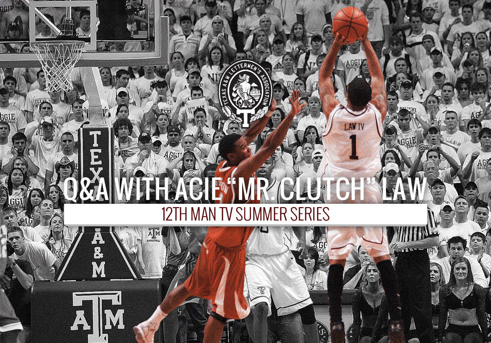

Penn
68–52Law scored 20. A&M’s second consecutive NCAA appearance moved into its second game.
TEXAS A&M BASKETBALL · 2006—07
Acie Law IV. The 2006–07 Aggies.
The season that changed what we could believe.
01 / BEFORE THE BREAKTHROUGH
The shot is the part we remember. The years are what made it matter.
Acie Law IV arrived at Texas A&M before there was much reason to expect a night like Lawrence. His freshman season ended 7–21, with sixteen losses in sixteen Big 12 games. By his senior March, he was leading the Aggies into the Sweet Sixteen. The distance between those two places cannot be measured by a jump shot alone.
It took practices nobody bought a ticket to see. It took teammates doing work that would never become a replay. Under Billy Gillispie, who arrived before the 2004–05 season, A&M learned how to make improvement repeatable: 21 wins, then 22, then 27. An NIT berth became an NCAA appearance. Returning to the tournament became an expectation a team could carry.
For Aggies, 2006–07 offered something deeply familiar in a newly visible setting: a group whose commitment to one another made the whole place feel larger. Law gave that team its signature moments. The team gave those moments their meaning.
RECORD: A&M YEAR-BY-YEAR RESULTS ↗02 / THE SEASON, GAME BY GAME
Thirty-four games. Twenty-seven wins.
Explore the margins, then choose a game
to see where it fits in the season.
SCORING MARGIN MAROON = WIN · GOLD = LOSS · SELECT A BAR
| Date | Opponent | Site | Result | Phase |
|---|
03 / THE PEOPLE WHO MADE IT POSSIBLE
Five starters. Thirty-four starts each.
Choose a player. Read the contribution.
Season averages across all games.
Law, Joseph Jones, Antanas Kavaliauskas, Josh Carter and Dominique Kirk started every game together. That kind of continuity was a resource. Jones led the team in rebounding. Carter made half of his three-point attempts. Kirk supplied 102 assists against 39 turnovers. Kavaliauskas gave A&M another scorer and rebounder inside.
The rotation mattered when the comfortable version of a game disappeared. Against Texas at Reed, Law left the floor in pain and Jones was on the bench with four fouls. Freshmen Donald Sloan and Bryan Davis helped keep the game intact until Law returned. A famous senior season also belonged to players learning how to answer a difficult moment for the first time.
Derrick Roland · Logan Lee · Beau Muhlbach · Bryson Graham · Martellus Bennett · Josh Johnston · Brian Blackburn · Slade Weishuhn · Jerrod Johnson · Chris Chapman
These players also appeared in the final statistics. View every player’s official line ↗
04 / FEBRUARY 3, 2007 · ALLEN FIELDHOUSE
Kansas had the building, the lead and the history. A&M had the next possession.
With 6:33 remaining, Kansas led 62–52. What followed is remembered for Law’s three over Brandon Rush, but the comeback first needed stops, a run, and Kavaliauskas finishing a three-point play to draw the Aggies level. Julian Wright put Kansas back in front. A&M went to its timeout with a two-point problem.
Law’s answer gave the Aggies their first lead since the first half. Then he did the less spectacular work that made it final: a defensive rebound, a drawn foul, two free throws. The result was A&M’s first win over Kansas in twelve tries, and the first win by a Big 12 South team at Allen Fieldhouse.
Selected checkpoints, not a full play-by-play. The contemporary recap places Law’s three at approximately 20–21 seconds. Read the original report ↗
05 / FEBRUARY 5, 2007 · REED ARENA
Lawrence had shown what A&M could do away from home. Reed showed what it could feel like together.
Texas brought Kevin Durant, who scored 28 points and collected 15 rebounds. A&M answered with Carter’s 24 points, Kavaliauskas’ 18, and Law’s 21 points and 15 assists. The victory was the Aggies’ twenty-first straight at home.
Those fifteen assists belong near the center of Law’s story. The shot-maker was also a player who helped the ball find the person best placed to use it. The roar at Reed had more than one source.
The return game in Austin would end differently: Texas 98, A&M 96 in double overtime, despite 33 from Law. This season was extraordinary without being invulnerable. Its losses are part of the record, too.
FROM THE NIGHT: THE OFFICIAL RECAP ↗06 / MARCH 2007 · LEXINGTON TO SAN ANTONIO
Law scored 20. A&M’s second consecutive NCAA appearance moved into its second game.
Law scored 26. The Aggies reached the Sweet Sixteen for the first time since 1980.
Kavaliauskas led A&M with 17. One point separated the Aggies from another round.
A season can end before the people who lived it are ready to let it go.
At the Alamodome, the final margin was one. Memphis advanced. A&M’s season stopped at 27–7. There would be no opportunity to settle what another possession might have changed, no way to convert all that had been built into one more evening together.
Twenty years later, there is no need to soften that ending to honor the team. The loss mattered because the season mattered. These Aggies had made the next game something an entire community could imagine, then anticipate, then ache to have back.
The Sweet Sixteen was a return, not the invention of A&M basketball history. The 1980 team had been there before. What 2007 did was bring a new generation into that story, with memories of its own and a standard it could see.
07 / THE ARCHIVE

Return to the reporting, the numbers and Law’s later reflection on his time in Aggieland.
01 Acie Law: the 2013 Q&ATexas A&M Athletics · June 7, 2013↗02 The complete season bookResults, player statistics & team totals · PDF↗03 A place in the raftersAcie Law Day announcement · February 2008↗WHAT REMAINED
Law finished as A&M’s first consensus first-team All-American and the winner of the Bob Cousy Award. The honors put a national name to what Aggies had watched develop, night by night.
But a program’s history is held in more places than its record book. It lives in the person who remembers where they watched the Kansas game. In the student who learned how loud Reed could become. In the younger Aggie who knows these players through stories someone still wants to tell.
Twenty years on, this team still gives us a reason to tell them.
Warmup photograph by Ruckmann, via Wikimedia Commons, licensed CC BY 3.0. Cropped and color-toned. Original upload: April 10, 2007; exact capture date unspecified.
2013 Q&A graphic: Texas A&M Athletics / Texas A&M Lettermen’s Association. Original lettering retained. Permission for wider distribution has not been established.
Local anniversary design concept prepared for review. Not an official university publication. Narrative interpretation is original; no interviews or quotations have been invented. “Changed everything” is an editorial title, not a claim that the program had no earlier achievements. Anniversary edition: 2027.